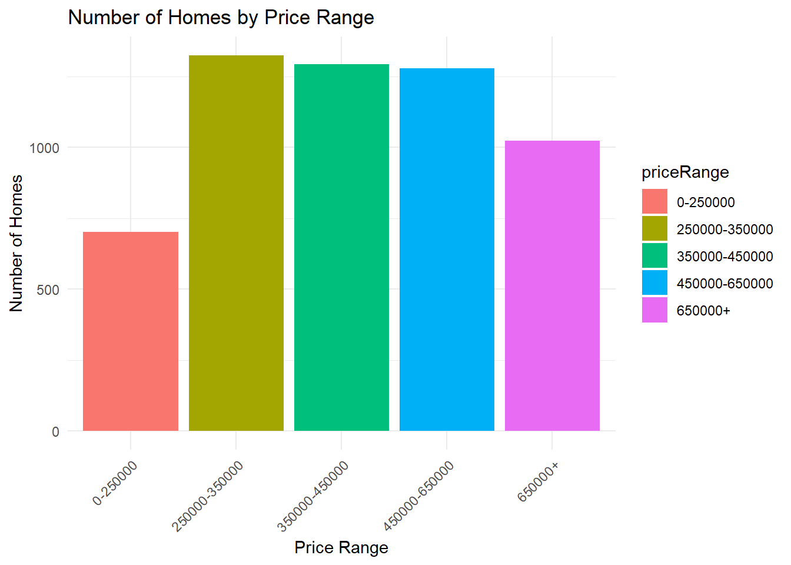
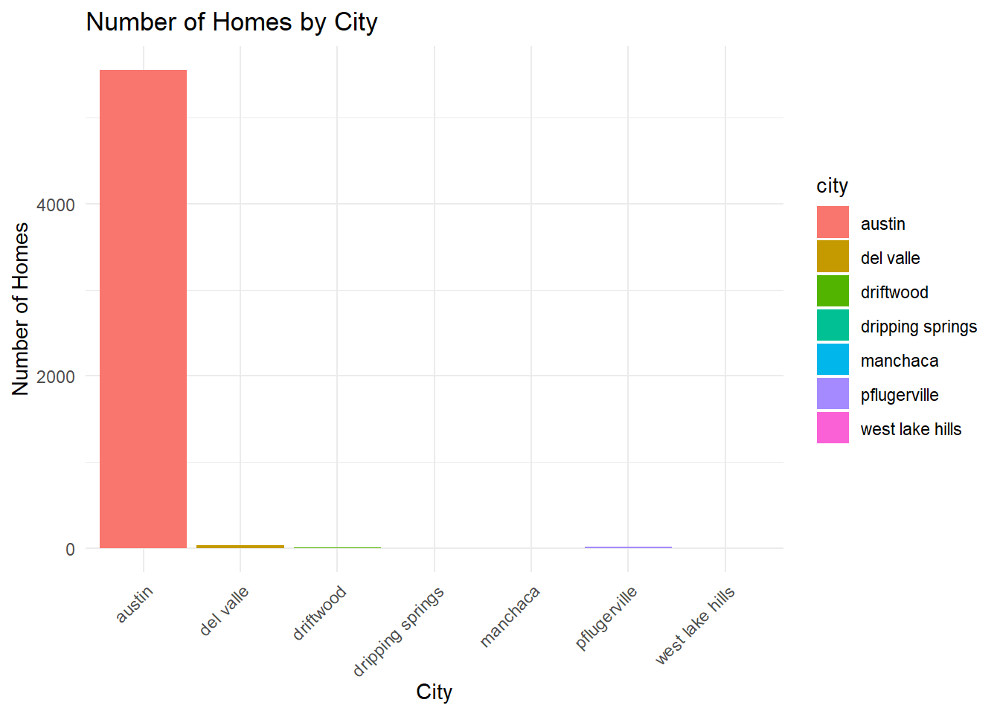
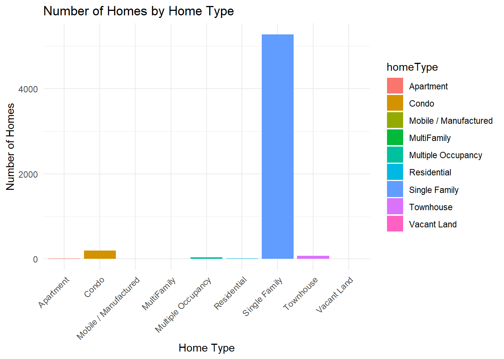
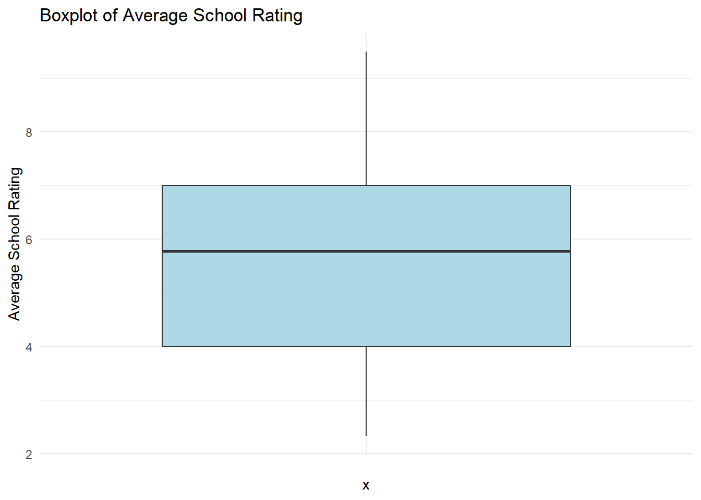

Zillow is a real estate market website that lists houses for sale in both the US and Canada. Zillow carries data on sale prices, rent prices, mortgage prices, locations, and house sizing details. This project seeks to construct predictive models on the listed price range of a property in the US. This project will enhance transparency in the real estate market by displaying the factors that impact listing price range. This can help buyers make informed decisions when buying a house, as well as help sellers figure out a practical price point to list their house at. # Exploratory Data Analysis Before we begin the analysis, here is a snippet of the first six rows of the Zillow data we will be working with. In the data set, there are 7498 observations.
Code
data |># description is much too longmutate(description =str_trunc(description, width =50)) |>head() |>kable() |>kable_styling()
id
city
description
homeType
latitude
longitude
garageSpaces
hasSpa
yearBuilt
numOfPatioAndPorchFeatures
lotSizeSqFt
avgSchoolRating
MedianStudentsPerTeacher
numOfBathrooms
numOfBedrooms
priceRange
1
austin
7300 Annette Cv, Austin, TX 78724 is a single f...
Single Family
30.28529
-97.64630
1
FALSE
2007
0
6795.0
3.666667
11
3
2
250000-350000
2
austin
Extravagant and luxurious 5 bedroom, 4.5 bath p...
Single Family
30.29841
-97.77605
2
TRUE
2015
0
8276.0
7.000000
16
5
5
650000+
3
austin
HIGH RENTABLE AREA! Beautifully kept duplex loc...
Multiple Occupancy
30.32740
-97.69390
1
FALSE
1967
0
8886.0
3.333333
15
4
6
0-250000
4
austin
Great house in the heart of downtown East Austi...
Single Family
30.25436
-97.72549
0
FALSE
1920
0
2178.0
4.000000
11
1
1
250000-350000
5
austin
FOR SALE BY OWNER AND FULLY RENOVATED: Wake up ...
Single Family
30.36166
-97.85528
0
FALSE
1999
0
12196.8
7.000000
16
4
5
650000+
6
austin
Under market pricing!!! Owner wants to move it...
Condo
30.36236
-97.71042
0
FALSE
1974
0
400.0
4.000000
14
2
3
0-250000
Strata will be used in the training data set due to an unbalanced lower proportion of houses in the 0-250000 price range.
Code
library(dplyr)# Check distribution of price_range in the full datasetdata |>count(priceRange) |>mutate(proportion = n /sum(n)) |>kable() |>kable_styling()
priceRange
n
proportion
0-250000
936
0.1248333
250000-350000
1767
0.2356628
350000-450000
1725
0.2300613
450000-650000
1706
0.2275273
650000+
1364
0.1819152
Price Range Distribution
This section maps the distribution of the priceRange variable. To begin with, pictured below is a chart displaying the summary of priceRange in our training data set this time.
Code
train |>count(priceRange) |>mutate(proportion = n /sum(n)) |>kable() |>kable_styling()
priceRange
n
proportion
0-250000
702
0.1248666
250000-350000
1325
0.2356813
350000-450000
1293
0.2299893
450000-650000
1279
0.2274991
650000+
1023
0.1819637
Below is a visual bar chart displaying the summary of priceRange in our training data set. From both the graph and the bar chart, it appears that there are more homes in our data set that have the price range of: 250000-350000 and fewer homes that have the price range of: 0-250000. This lines up with the proportions of the entire data set from earlier, and further proves why it was necessary to use strata.
Code
ggplot(train, aes(x = priceRange, fill = priceRange)) +geom_bar() +theme_minimal() +labs(title ="Number of Homes by Price Range", x ="Price Range", y ="Number of Homes") +theme(axis.text.x =element_text(angle =45, hjust =1)) # Diagonal prices

The graph is reasonable, as the more average house prices (250000 to 650000) are the most populated with houses. The more extreme min and maximum price ranges have less houses, due to their rarity.
Now that we understand the distribution of price ranges better, it’s time to look for the factors that may influence them the most.
Price Range and City
Assuming the price range will vary by city is a reasonable guess, as some cities are known to be more expensive than others. To try and prove this, it is first best to look for how many properties exist in each city, so we can get a feel for the scope of the houses. We can do this buy creating a chart similar to the one we used for the count of priceRange.
ggplot(train, aes(x = city, fill = city)) +geom_bar() +theme_minimal() +labs(title ="Number of Homes by City", x ="City", y ="Number of Homes") +theme(axis.text.x =element_text(angle =45, hjust =1)) # Diagonal city

Wow! It seems like 98% of our homes are located in Austin. Because of this horribly uneven and skewed distribution, it’s not worth looking into if priceRange is effected by the city the house is in, since 98% of the houses are in the same city.
Let’s try something different.
Price Range and Home Type
It is reasonable to suggest that the type of home may effect the price range the home is in due to size and accommodations. To prove this however, we will once again need a count of all the different home types.
ggplot(train, aes(x = homeType, fill = homeType)) +geom_bar() +theme_minimal() +labs(title ="Number of Homes by Home Type", x ="Home Type", y ="Number of Homes") +theme(axis.text.x =element_text(angle =45, hjust =1)) # Diagonal homeType

Once again we have the same issue that happened when trying to correlate priceRange to city. The proportions are just too far off. 93% of houses in our training set are single family homes, so even if they were more expensive, it’s unfair to justify it that way with such a skewed proportion.
Let’s try something else.
Price Range and Average School Rating
It would be interesting to see if there is a association between the average rating of a school, and the price range of a house. It is a generalized thought that the “nicer” (more expensive) the neighborhood is, the higher the rating for their schools. Let’s see if this is true. First, we should calculate the summary statistics for the average school rating, to make sure this is worth looking into.
ggplot(train, aes(x ="", y = avgSchoolRating)) +geom_boxplot(fill ="lightblue") +theme_minimal() +labs(title ="Boxplot of Average School Rating", y ="Average School Rating")

Using the box plot and our summary statistic chart, we can see a clear spread of data that is similar to our proportions on price ranges from earlier. This is promising, let’s find out if there is a correlation.
Comparison
Using another box plot, we will compare average school rating to price range. As shown in the box plot below, there is a positive association between the two variables. It is more likely that the lower the rating for the school is, the lower the median price range is. There is not much change in the higher scale of the chart (450000+), but there is a clear climb in price that follows a climb in school rating. This variable will be able to help us in predicting priceRange.
Code
ggplot(train, aes(x = priceRange, y = avgSchoolRating, fill = priceRange)) +geom_boxplot() +theme_minimal() +labs(title ="Comparison of Average School Rating by Price Range", x ="Price Range", y ="Average School Rating")